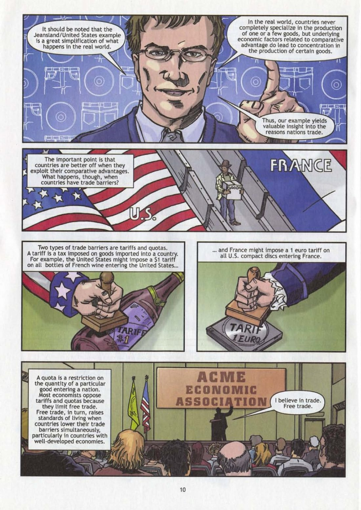

You're the judge. For each part: read the comic on the left → get the check right → write 1–2 sentences. Done = 4 green checks + 4 answers, then turn in at the bottom.
- Trade barrier = a rule that makes imports harder
- Tariff = a tax on goods from another country
- Quota = a limit on how much of something can come in
- National security = keeping a country safe
- Fair trade = paying small farmers a set, higher price
- Co-op = a group of farmers who work and sell together
- Certify = officially say something meets the rules

Click the page to make it bigger.
Turn in your work
Your work saves on this device, so you can come back later. Your teacher sees it after you turn it in.
Comics: The Story of Foreign Trade and Exchange (2008), Federal Reserve Bank of New York, a free classroom comic (cropped). The History of Authentic Fair Trade, Equal Exchange, a free educational comic.